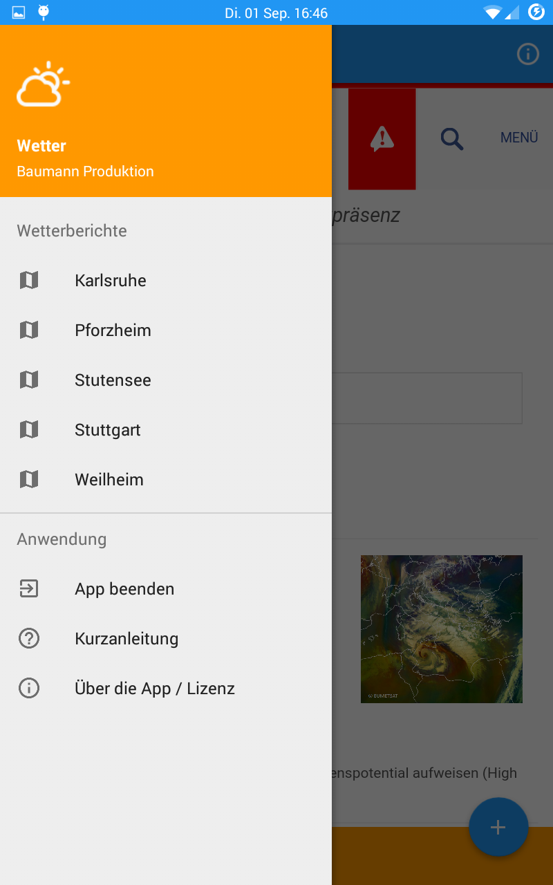
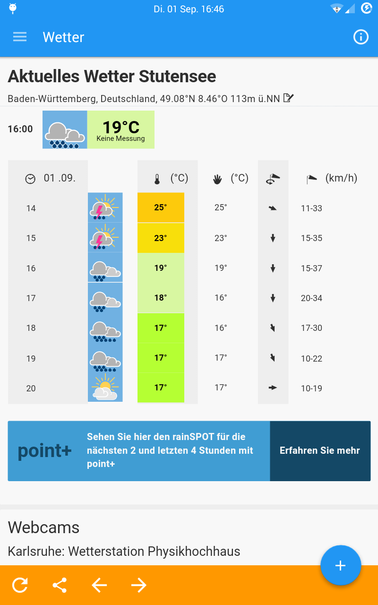

Es handelt sich bei dieser App um eine einfache WebView-App. Das heißt, sie stellt die Internetseite von Meteoblue
dar und speichert diese im Cache, so dass die App auch ohne
Internetverbindung genutzt werden kann. Hier einige Infos:
- Die Zurück-Taste des Telefons beendet die App (zur Navigation die Pfeiltasten am unteren Rand benutzen).
- Es
wird immer zuerst die im Cache gespeicherte Vorhersage geladen (zum
Aktualisieren der Vorhersage den Knopf am unteren Rand benutzen).
- Die Städte sind vorgegeben. Man kann aber auf jeder Seite von
Meteoblue nach oben scrollen und nach einer beliebigen Stadt suchen.
Diese Vorhersage wird allerdings nicht im Cache gespeichert.
Navigations Drawer

Wenn man vom linken Bildschirmrand zur Mitte hin wischt, öffnet sich
der Navigationsdrawer. Hier kann man zwischen den voreingestellten
Städten wechseln. Außerdem kann man die App beenden, zu den
Lizenzhinweisen wechseln oder sich diese Anleitung öffnen.
Standardbildschirm

Standardmäßig öffnet sich für jeden Standort zuerst die
Wettervorhersage der nächsten Stunden (aktuelles Wetter).
Floating Action Button
Durch Klicken
auf den blauen Punkt rechts unten (Floating Action Button), kann man
weitere Vorhersagen des aktuellen Standorts (Detail, 7-Tage-Vorhersage)
bzw. die Wetterkarten oder das Thema des Tages des Deutschen
Wetterdienstes erreichen.
Funktionsknöpfe
Da die App immer zuerst die im Cache gespeicherten Internetseiten läd,
wird
immer wieder eine "veraltete" Vorhersage angezeigt. Mit diesem Knopf
kann man die angezeigte Seite aktualisieren. Dabei wird der komplette
Cache der App gelöscht. Alle Internetseiten müssen also erst erneut
aufgerufen werden, bevor sie wieder offline angezeigt werden können.
Mit dieser Funktion wird von der aktuell geöffneten Internetseite ein
Bildschirmfoto erstellt und auf der SD-Karte des Telefons gespeichert.
Dieses kann danach geteilt werden. Es wird nicht nur der auf dem
Bildschirm angezeigte Bereich als Bild gespeichert, sondern die
komplette Seite. Die Seite sollte komplett geladen sein. Noch nicht
geladene Teile werden auf dem Bildschirmfoto nicht (bzw. als weiße
Fläche) dargestellt. Um sicher zu gehen, sollte man sich vor dem Teilen
erst einmal die ganze Seite ansehen, um sicher zu stellen, dass sie
schon komplett geladen wurde.
Die zwei Pfeiltasten dienen der Navigation. Man kommt zur vorherigen
bzw. nächsten angezeigten Internetseite. Diese Funktion funktioniert
nur bis man mit Hilfe des Navigations Drawers die Stadt ändert. Die Zurück-Taste des Telefons beendet die App.